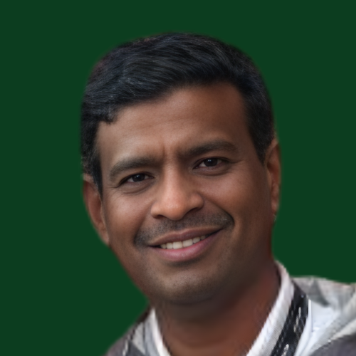
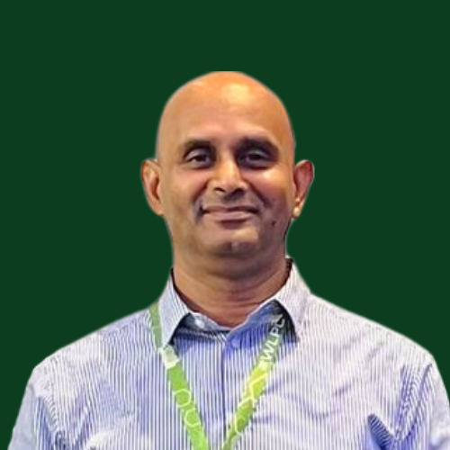
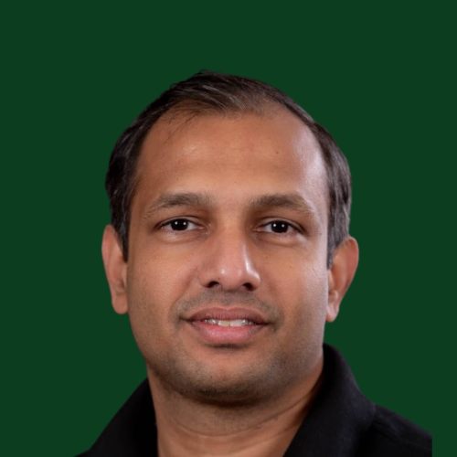

Guest Speakers
Learn from industry experts and thought leaders

Susinder Gulasekaran
Swinnovate
The Problems with Spatial reuse in Wi-Fi 6 & Wi-Fi 7

Dr. Srikanth
Nanocell Networks
802.11 PHY Evolution, Hits and Misses

Rasika
Independent Expert
Exploring Wi-Fi 7 Security Enhancements
Shashank
Cambium Networkst
Real Time WiFi Testing - Providing Immediate Stability & Behavioural Insights

Gjermund Raaen
Independent Expert
Understanding EHT Preamble in WiFi 7 Phy Layer
Shivam Thakur
Plume Design, Inc